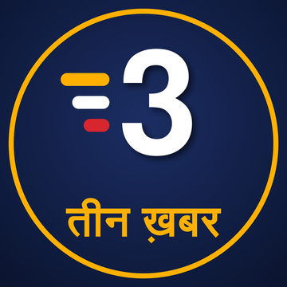

तीन ख़बर · Three News
3 खबरें. पक्की खबरें. · India's top 3. Checked twice.

रोज़ का शेड्यूल · Daily schedule (IST)
काम की खबर (नौकरी, परीक्षा, सरकारी योजनाएं) केवल तीन ख़बर पर। Breaking alerts can come any time from 6 AM to 11 PM.
हमारा वादा · Our promise
हर खबर कम से कम 2 स्वतंत्र मीडिया संस्थानों की रिपोर्ट के बाद ही। Every script is fact-checked against those reports before it goes out.
हर वीडियो पर तारीख और समय, ताकि आपको पुरानी खबर न मिले. Date and time on every video.
भूकंप (USGS), बाढ़ और चक्रवात (GDACS) की सूचना सीधे आधिकारिक आंकड़ों से — नुकसान का अंदाज़ा नहीं, सिर्फ तथ्य।
सिर्फ तथ्य, कोई राय या पक्ष नहीं. Facts only, no opinions or party-political framing.
हर वीडियो के विवरण में मूल रिपोर्टों के लिंक. Every description links to the original reports.
सारांश AI की मदद से लिखे जाते हैं और आवाज़ AI की है; वीडियो पर AI लेबल लगा है. Summaries are AI-assisted, narrated by an AI voice and labelled as synthetic.
गलती दिखी? · Spotted a mistake?
वीडियो पर कमेंट करें — हम स्रोत दोबारा जांचते हैं और ज़रूरत हो तो सुधार पिन करते हैं। Comment on the video or email us; we recheck the sources and pin a correction when needed.